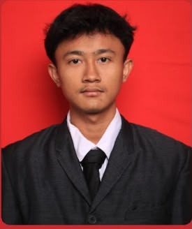

Mahasiswa Sistem Informasi Telkom University yang bersemangat, analitis, cepat belajar, mampu bekerja dalam tim, dan berkomitmen. Mampu bekerja dalam tim maupun mandiri, serta memiliki semangat tinggi untuk belajar hal-hal baru di bidang teknologi. Memiliki minat besar pada kegiatan kampus, terutama yang berkaitan dengan acara utama, dan saya ingin berkontribusi lebih banyak pada komunitas kampus.